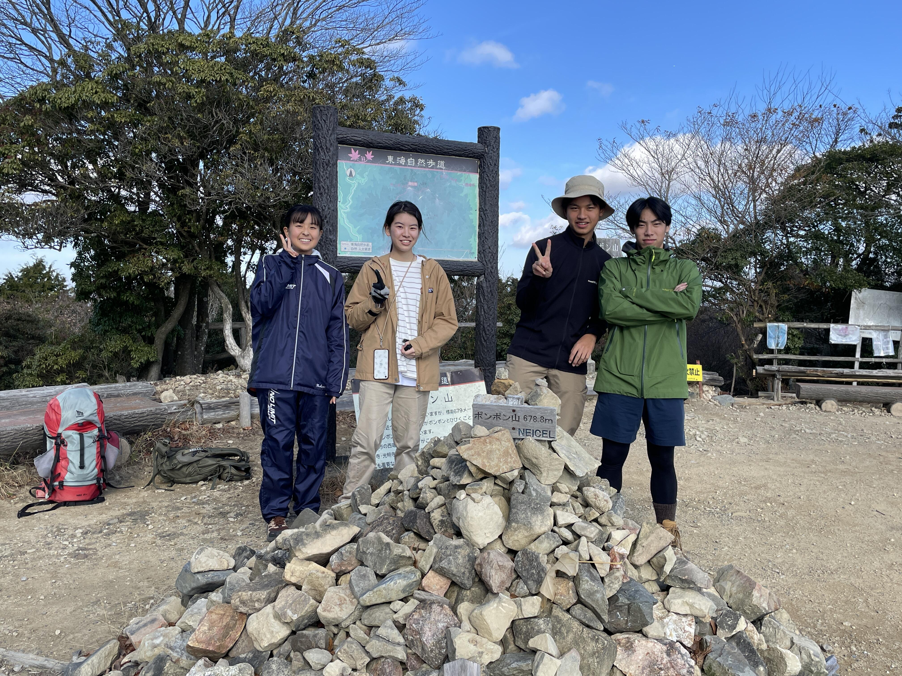
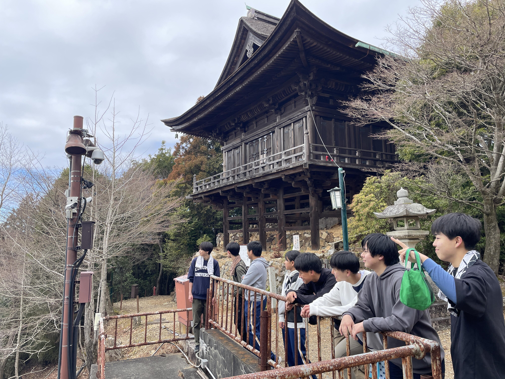
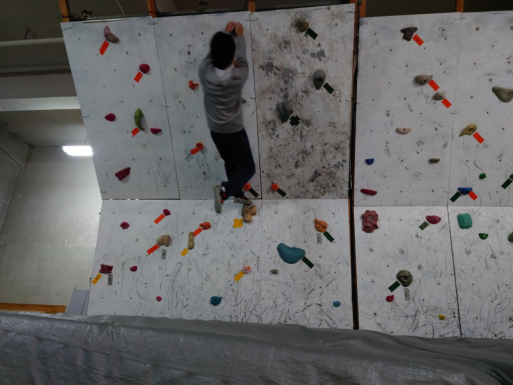

令和６年度 春山講習会
３月20日（水）から22日（金）にかけて、高体連主催の春山講習会に参加し、大分県の由布岳に登りました。
山城高校からは部員14名、顧問2名が参加しました。
20日の夕方に大阪南港に集合し、フェリーに乗船しました。ほとんどの部員にとって初めての船旅です。船から見た明石海峡大橋は驚くほどきれいでした。
大分県の別府港に到着したのは21日の6時55分です。船が港に到着する前からほんのり硫黄の香りがしていました。朝早くの到着でしたが、みんな移動の準備ができていたので、他のお客さんよりも素早く下船することができました。
下船後はそのままバスで由布岳に向かい、全体でミーティングをしたのち、各校単位で登り始めました。足元に霜が残る中での山行でしたが、歩けば歩くほど体が火照ってくるのを感じました。下山後はバスで温泉に向かい、登山の疲れを癒しました。その後はフェリーに乗り、大阪南港に向かいました。
大阪南港に帰ってきたのが22日の6時35分。下船後は、帰る人を除いて日本一低い山といわれる天保山に行き、そこで解散しました。
道のりも長く疲れがたまる３日間でしたが、生徒たちにとっては仲間とともに困難に挑戦し、絆を深めた機会になったと思います。
2023年の夏以降は、ほかにも８月に比叡山登山、
９月に大江山合宿登山、

10月にナイトハイク、
11月に武奈ヶ岳登山、
12月にポンポン山登山、

１月に稲荷山初詣、
２月に醍醐山登山、

３月に牛松山登山を実施しました。
山城高校山岳部は多くの方の支えにより活動できています。みなさま、今年一年お世話になりました。今後とも、山城高校山岳部をよろしくお願いします。
夏休み登山②（愛宕山）
8月7日（月）に部員5名、顧問2名で愛岩山登山を実施しました。
天候が心配でしたが、集合時の天気は曇り。あまり暑くなりすざない気温で登山開始することができました。
今回の登山では、1年生は先頭にチャレンジしてみました。愛宕山登山経験のある2年生は最後尾で見守ってみようということで、元気よく駆け出しスタートしました。
この愛宕登山は最初は急な坂道ですが、ほとんどの道は階段になっているのが特徴です。また、道中にはいろいろな場所に東屋もありました。
登っていくと、先ほどまでの滝のような汗はだんだんと冷え、少し寒さを感じる程の気温となりました。生徒たちは替えのTシャツや上着を羽織るなどして、気温に合わせてそれぞれが行動できたと思います。
この門が見えると山頂の愛宕神社はもうすぐ！山頂付近では鹿を近くで見ることができました。
山頂の愛石神社で生徒たちはお参りし、少し下ったところで昼食休憩をしました。
下りは登ってきた階段を下るだけ...ではなく、少し寄り道をし、愛宕山ケーブル跡やホテル跡を見に行きました。
元の道に戻ってからも、登りでは気がつかなかったケーブルカーなどの跡を見つけることができ、また違った様子を感じながら下りました。
夏休み登山①（交野山）
７月２９日（土）に部員６名、顧問２名で交野山登山を実施しました。
JR津田駅に集合し、経験豊富な２年生が後輩を引っ張っていく良いスタートを切れました。
１年生にとっては、初めて２年生との登山になります。先輩からのアドバイスを聞きながら登ったり、普段の学校生活の話もしたり、親交も深まったと思います。
登山ルートは、駅から少し歩き、国見山登山口から登り始めました。暑さ厳しい日でしたが、山道に入るとアスファルト道よりも涼しく感じました。
その後、国見山ー交野山ー旗振山ー龍王山と複数の山を縦走しました。道中歩きやすい道ばかりではありませんが互いに声を掛け合いながら登ることができました。
予定よりも遅い下山時間となってしまいましたが、生徒は暑い中各自で体調管理をしながら無理すること無く登ることができたと思います。
夏休みには交野山登山以外にも後２回登山を計画しています。
長期休業中にしか企画できない登山もあるので、この夏休みを有意義に過ごして、登山経験を増やしていきたいと思います。
今年度初のクライミングに挑戦しました
令和５年４月２４日(月)、サンガスタジアムbyKYOCERAにて行われた、クライミング合同練習会に参加しました。
生徒は昨年からこの練習会に参加しており、自分のレベルに合わせたクライミングに挑戦しました。初参加の顧問にもいろいろ教えながら頑張ってくれました。
教えてもらったことを少し書いておくと、
・岩の周りに貼ってあるシールの色で難易度が分かれており、同じ色のシールが貼ってある岩を登っていく
・最初はスタートの岩に両手をかけ、両足も地面から離し岩に登った状態でスタート
（すごい体勢からスタートするコースもあります）
・登っていく岩の形はさまざまで、初級は手が引っかけられるような形状でのぼりやすい
・岩から岩へ飛んだり、小さい岩の上で足を変えたり等、技がたくさんあるようです
他の参加者の登り方から作戦を考えたり、登っている参加者へ応援をしたり、良い練習をすることができました。
２月登山を実施しました（音羽山）
令和５年２月18日（土）に、山岳部では部員８名、顧問１名の計９名で音羽山登山を実施しました。
追分駅を出発し、音羽山を登頂、膳所駅に下山というルートで縦走しました。
２年生はすでに登頂済みとのことでしたが、眺めもよく気持ちのよい登山となりました。
この調子で様々な山に登れたらと思います。


{kind=link}
{kind=link}
{kind=link}
第７回初級者ボルダーセッションに参加しました
２月11日（土）に城陽高校で開催された、第７回初級者ボルダーセッションに男子４名、女子１名の計５名が参加しました。
参加校は少なかったですが、今年１年ボルダリングに励んだ部員たちは頑張って取り組みました。
決勝へは３名が進出し、１位、２位、３位をそれぞれ獲得しました。
この結果を励みに、これから中級者へなれるようにみんなで取り組んでいきたいと思います。

ナイトハイクを実施しました（山岳部12月登山）
令和４年12月９日（金）から10日（土）にかけて、山岳部では部員13名、顧問１名の計14名でナイトハイクを実施しました。
20:00に学校に集合した後、中庭でテントを設営し、各々で就寝しました。
普段行わない「学校での宿泊」という体験に、部員一同大いに楽しんでいました。
翌朝、4:00に起床し、学校を出て、大北山に向けて山行を開始しました。
暗く寒い中でしたが、天気にも恵まれ、無事山頂にたどり着くことができました。
また、日の出の様子も高台から見ることができました。
2022年、登り納めとして、よいナイトハイクができたと思います。

第３回北桑田ボルダーセッションに参加しました
11月19日（土）に実施された、第３回北桑田ボルダーセッションに、男子４名、女子１名が参加しました。
本年度から取り組んでいるボルダリング、その成果を発揮できる場ということもあって、部員一同張り切って参加しました。
結果は最高順位４位と惜しくも表彰には至りませんでしたが、部員一同楽しく参加することができました。
この経験を糧に、これからもクライミングに励みたいと思います。
11月登山を実施しました（六甲山）
山岳部は、顧問１名、部員８名で六甲山にて11月登山を行いました。
六甲駅に集合し、部員一同元気に出発しました。
本年度始めて地図読みを部員が行いながら、長峰山、摩耶別山、東山へと歩きました。
10kmを越える山行ということもあってか、疲れの見える部員も見受けられましたが、大きな怪我もなく新神戸駅へと到着することができました。
爽やかな秋晴れの中、景色の素晴らしい山行を楽しむことができたと思います。
今後も、様々な体験をしていければと思います。
10月登山を実施しました（大江山）
２学期中間考査も終わった10月23日（日）
山岳部は、顧問１名、部員９名で大江山にて10月登山を行いました。
桃山高校と合同で実施し、総勢22名での山行となりました。
京都駅から貸切バスで大江山グリーンロッジへと向かい、秋へと移り変わる山々を見ながら出発しました。
体力に不安を覚える部員もいましたが、順調に進み、鍋塚、鳩ヶ峰、大江山と３つの山のピークを踏むことができました。
爽やかな秋晴れの中、久々の山行を楽しむことができたと思います。
また、桃山高校山岳部の方々から、テントの立て方などのアドバイスもいただき、大変勉強になりました。
様々な面で桃山高校山岳部の皆さんには大変お世話になりました。ありがとうござました。
カテゴリ一覧
主要リンク